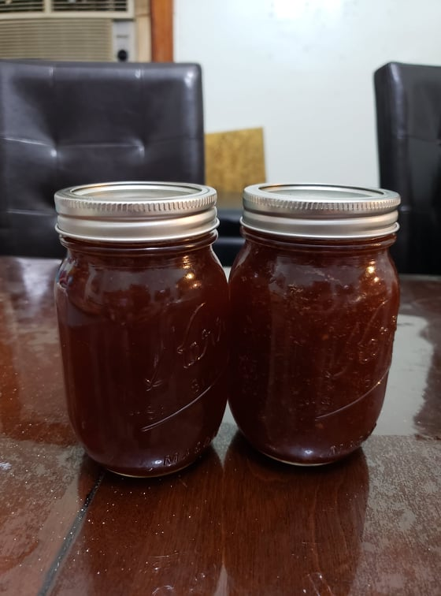

Blatjang

Ingredients:
- 680 g Dried peaches
- 238 lb Dried apricots
- 3 liters Brown wine vinegar, or any fruity vinegar
- 500 g Red onion
- 2500 g Sugar
- 12 g Salt
- 7 g Cayenne pepper
Instructions:
- Soak the peaches and apricots in the vinegar overnight, at least 12 hours.
- Remove the fruit from the vinegar and reserve the vinegar. Blend the fruit in a food processor and reserve. Blend the onion in a food precessor and reserve.
- Combine all the ingredients into a large pot and bring to a boil. Then reduce to a simmer and cook for 2 hours, stirring occasionally.
- Bottle immediately. It is ready to serve now, but will be better after maturing for 2 - 4 weeks.